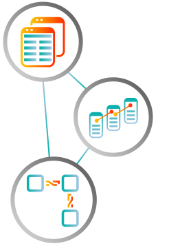
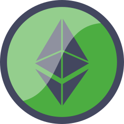
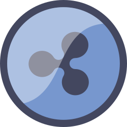

MENU

BITCOIN


CERRAR
¿Qué es Bitcoin?
SISTEMA DE PAGOS
INNOVACIÓN
EL FUTURO
SISTEMA DE PAGOS
El dinero que tenemos depositado en el banco, el que le debemos a la tarjeta de crédito, un porfolio de acciones de Apple, el pago electrónico de la boleta de gas o luz, de un sueldo o el de un ticket aéreo, son solo números en la pantalla de un sistema de pagos operado por entidades financieras y gobernado por bancos centrales y otros entes reguladores.
Este sistema, tal cual está concebido, es caro y poco eficiente para el usuario. ¿Porque que pagar para enviar dinero a China o esperar días para que se acredite en la cuenta? ¿Porque nos cobran por depositar un cheque en una cuenta o por recibir un pago en dólares americanos desde el exterior? ¿Porque pagar costos de mantenimiento y comisiones abusivas y absurdas cuando las mismas operaciones se pueden realizar virtualmente gratis?
En este contexto -para decirlo en pocas palabras- el Bitcoin fue inventado como un Sistema Descentralizado de Pagos (para pagar, enviar y recibir dinero) que no requiere, ni el aval ni el respaldo de una autoridad central.
Este sistema, tal cual está concebido, es caro y poco eficiente para el usuario. ¿Porque que pagar para enviar dinero a China o esperar días para que se acredite en la cuenta? ¿Porque nos cobran por depositar un cheque en una cuenta o por recibir un pago en dólares americanos desde el exterior? ¿Porque pagar costos de mantenimiento y comisiones abusivas y absurdas cuando las mismas operaciones se pueden realizar virtualmente gratis?
En este contexto -para decirlo en pocas palabras- el Bitcoin fue inventado como un Sistema Descentralizado de Pagos (para pagar, enviar y recibir dinero) que no requiere, ni el aval ni el respaldo de una autoridad central.
INNOVACIÓN
Sabemos que, en el mundo digital, todo se puede copiar y replicar tantas veces como uno quiera. Por eso, lo más difícil al implementar un nuevo Sistema de Pagos es asegurarse que nadie pueda gastar dos veces los mismos fondos.
Tradicionalmente, esto se lograba teniendo una autoridad central (como puede ser cualquier Entidad Financiera en el mundo real o empresas como PayPal en el mundo digital) que verificaba todas y cada una de las transacciones.
La principal innovación, la que hace al Bitcoin tan especial, es que utiliza un sistema de ‘consenso descentralizado’, esto quiere decir millones de computadoras interconectadas a una red enorme donde la misma transacción se verifica y se valida simultáneamente desde diferentes computadoras, lugares, ciudades e incluso países.
Esto es, básicamente, poder realizar o recibir un pago sin necesidad de intermediarios, sin usar bancos, si necesidad de pagar comisiones ni esperar días para que los fondos se acrediten.
Tradicionalmente, esto se lograba teniendo una autoridad central (como puede ser cualquier Entidad Financiera en el mundo real o empresas como PayPal en el mundo digital) que verificaba todas y cada una de las transacciones.
La principal innovación, la que hace al Bitcoin tan especial, es que utiliza un sistema de ‘consenso descentralizado’, esto quiere decir millones de computadoras interconectadas a una red enorme donde la misma transacción se verifica y se valida simultáneamente desde diferentes computadoras, lugares, ciudades e incluso países.
Esto es, básicamente, poder realizar o recibir un pago sin necesidad de intermediarios, sin usar bancos, si necesidad de pagar comisiones ni esperar días para que los fondos se acrediten.
EL FUTURO
Si definimos al Bitcoin como un nuevo Sistema de Pagos, son sus principales características y propiedades que lo presentan como una alternativa real al Dólar, al Euro y a las principales monedas del mundo utilizadas hoy en día.
El Bitcoin es global e imposible de falsificar, las transacciones en bitcoin son en tiempo real e irreversibles, transparentes, baratas y seguras.
Desde que se inventó en 2008, el Bitcoin creció hasta tal punto de convertirse en una tecnología (llamada Block-Chain), una moneda, un vehículo de inversión y una comunidad de millones de usuarios que la avalan.
El Bitcoin es global e imposible de falsificar, las transacciones en bitcoin son en tiempo real e irreversibles, transparentes, baratas y seguras.
Desde que se inventó en 2008, el Bitcoin creció hasta tal punto de convertirse en una tecnología (llamada Block-Chain), una moneda, un vehículo de inversión y una comunidad de millones de usuarios que la avalan.
CERRAR

¿Cómo se guarda un Bitcoin?
REVOLUCIÓN
BILLETERAS VIRTUALES
UN CONSEJO
REVOLUCIÓN
Bitcoin es revolucionario porque le brinda total autonomía al individuo. No se necesita de nadie, no se debe depender de una institución y no es necesario confiar en un tercero para guardar un Bitcoin de manera segura.
Para poder comprar un Bitcoin, primero hay que pensar bien que es lo que es lo que está guardando y para que se lo guarda. De la misma manera que uno se toma un minuto para elegir su banco o compañía de seguros, hay que hacer lo mismo al momento de empezar a operar con Bitcoins.
Guardar un Bitcoin quiere decir: Definir como y donde se va a atesorar y de que manera voy a transferirlos o recibirlos. Buscar la mejor solución de acuerdo a un determinado perfil operativo o según las necesidades de cada uno.
Para poder comprar un Bitcoin, primero hay que pensar bien que es lo que es lo que está guardando y para que se lo guarda. De la misma manera que uno se toma un minuto para elegir su banco o compañía de seguros, hay que hacer lo mismo al momento de empezar a operar con Bitcoins.
Guardar un Bitcoin quiere decir: Definir como y donde se va a atesorar y de que manera voy a transferirlos o recibirlos. Buscar la mejor solución de acuerdo a un determinado perfil operativo o según las necesidades de cada uno.
BILLETERAS VIRTUALES
Una de las opciones más seguras para atesorar y operar con sus Bitcoins es a través una Billetera Física (Hardware Wallet). Se trata de un pequeño dispositivo o microcomputadora, muy similar en forma y tamaño al tele-comando de un auto pero con una pequeña pantalla, que permite atesorar, enviar y recibir Bitcoins.
Estas Wallets (Billeteras Virtuales), también conocidas como Almacenamiento en Frio (Cold Storage) se conectan a Internet de manera esporádica solamente para ejecutar transacciones. Por eso son extremadamente seguras, porque al estar off-line casi todo el tiempo, no se pueden hackear.
Estas Wallets (Billeteras Virtuales), también conocidas como Almacenamiento en Frio (Cold Storage) se conectan a Internet de manera esporádica solamente para ejecutar transacciones. Por eso son extremadamente seguras, porque al estar off-line casi todo el tiempo, no se pueden hackear.
UN CONSEJO
Almacene sus Bitcoins usted mismo, tomando los recaudos necesarios y con el apoyo adecuado, el mejor custodio de sus activos es usted. Pero es importantísimo que sepa que cuando uno mismo atesora (guarda) sus propios Bitcoins, es usted y nadie más que usted el responsable por la seguridad e integridad de sus monedas.
CERRAR
¿De dónde salen los Bitcoins?
Para entender en profundidad como se crea un nuevo Bitcoin, hay que antes adentrarse en el concepto de crypto-minado, pero para explicarlo muy fácilmente: Hay gente (y grandes empresas) que arman computadoras que trabajan las 24 horas del día sin parar y sirven solo para una cosa: Verificar transacciones realizadas con Bitcoins. Estas computadoras se conectan a la red descentralizada, comienzan a verificar las transacciones y así validan los pagos realizadas con Bitcoins.
Por este trabajo, esta gente es recompensada con nuevos Bitcoins por un valor proporcional a la cantidad de poder computacional que estos agregan a la red. En otras palabras, el sistema está fundado de tal modo que, más transacciones ayudas a validar, mas Bitcoins creás y más te llevas a tu billetera.
El Minado de Bitcoins es negocio en sí mismo, un modelo de negocios complejo y una tipología de inversión completamente diferente, que hoy se presenta un gran potencial en términos de crecimiento y retornos.
Por este trabajo, esta gente es recompensada con nuevos Bitcoins por un valor proporcional a la cantidad de poder computacional que estos agregan a la red. En otras palabras, el sistema está fundado de tal modo que, más transacciones ayudas a validar, mas Bitcoins creás y más te llevas a tu billetera.
El Minado de Bitcoins es negocio en sí mismo, un modelo de negocios complejo y una tipología de inversión completamente diferente, que hoy se presenta un gran potencial en términos de crecimiento y retornos.
CERRAR
¿Quién controla a Bitcoin?
No hay una persona o entidad central a cargo del Bitcoin porque este, de manera natural y consensuada, se auto-regula a sí mismo.
Bitcoin es un sistema de Código abierto, esto quiere decir que es distribuido y desarrollado libremente, donde programadores de todo el mundo pueden proponer cambios en el software, pero al final son los “Mineros” (las millones de computadoras que validan las transacciones) que, con su poder de procesamiento, “votan” si aceptan o no la actualización propuesta.
Si el cambio que se propone empeora el funcionamiento de la red, el mismo se descarta por mayoría (o falta de adeptos), si el cambio al software mejora el funcionamiento de la red, se acepta por consenso, básicamente porque les conviene a todos.
Es por esto, y por otras herramientas de índole técnico, que es casi imposible manipular al Bitcoin y lo que lo hace particularmente disruptivo.
Bitcoin es un sistema de Código abierto, esto quiere decir que es distribuido y desarrollado libremente, donde programadores de todo el mundo pueden proponer cambios en el software, pero al final son los “Mineros” (las millones de computadoras que validan las transacciones) que, con su poder de procesamiento, “votan” si aceptan o no la actualización propuesta.
Si el cambio que se propone empeora el funcionamiento de la red, el mismo se descarta por mayoría (o falta de adeptos), si el cambio al software mejora el funcionamiento de la red, se acepta por consenso, básicamente porque les conviene a todos.
Es por esto, y por otras herramientas de índole técnico, que es casi imposible manipular al Bitcoin y lo que lo hace particularmente disruptivo.
CERRAR
¿Por qué el Bitcoin es un bien preciado?
La pregunta sería, ¿Qué es lo que le da valor al Bitcoin? ¿Qué es lo que lo hace valioso?. La respuesta es sencilla: Los Bitcoins son escasos y cada vez más útiles.
Miremos Oro como un ejemplo de moneda. Hay una cantidad limitada de Oro en la tierra. Cada vez que se extrae nuevo oro de una mina, las reservas disponibles caen y por ende se vuelve más difícil y más caro encontrar y minar oro nuevo. Lo mismo sucede con el Bitcoin.
Hay solo 21 millones de Bitcoins, y a medida que el tiempo pasa y su aceptación crece, se vuelven cada vez más difícil de minar, y así el precio aumenta.
Miremos Oro como un ejemplo de moneda. Hay una cantidad limitada de Oro en la tierra. Cada vez que se extrae nuevo oro de una mina, las reservas disponibles caen y por ende se vuelve más difícil y más caro encontrar y minar oro nuevo. Lo mismo sucede con el Bitcoin.
Hay solo 21 millones de Bitcoins, y a medida que el tiempo pasa y su aceptación crece, se vuelven cada vez más difícil de minar, y así el precio aumenta.
CERRAR
¿Qué es la tecnología Block-Chain?
EL INICIO
EL CONCEPTO
EL INICIO
Para entenderlo rápidamente, podemos decir que el Bitcoin fue la primera aplicación desarrollada con tecnología Block-Chain.
A este punto, es innegable que el Block-Chain es una invención por demás ingeniosa, disruptiva al máximo y claramente revolucionaria que, desde su creación en 2008, ha evolucionado a algo mucho más grande que el Bitcoin.
Al Bitcoin lo llaman “el oro digital” por una buena razón. A la fecha, El Bitcoin ya ha pasado los 140 Billones de dólares americanos de capitalización ($140,694,449,570). Esto quiere decir que, si Bitcoin fuera un Banco Norteamericano, ocuparía el 5to lugar en el Ranking de los bancos más grandes de los Estados Unidos.
Pero lo que hace pensar que esta tecnología llegó para quedarse, es que hoy ya se están generando una innumerable cantidad de aplicaciones basadas en Block-Chain que generan valor en nuestra vida diaria, como internet en tu auto por ejemplo, y lo mejor de todo es que uno no tiene que saber como funciona el Block-Chain para usarlo.
A este punto, es innegable que el Block-Chain es una invención por demás ingeniosa, disruptiva al máximo y claramente revolucionaria que, desde su creación en 2008, ha evolucionado a algo mucho más grande que el Bitcoin.
Al Bitcoin lo llaman “el oro digital” por una buena razón. A la fecha, El Bitcoin ya ha pasado los 140 Billones de dólares americanos de capitalización ($140,694,449,570). Esto quiere decir que, si Bitcoin fuera un Banco Norteamericano, ocuparía el 5to lugar en el Ranking de los bancos más grandes de los Estados Unidos.
Pero lo que hace pensar que esta tecnología llegó para quedarse, es que hoy ya se están generando una innumerable cantidad de aplicaciones basadas en Block-Chain que generan valor en nuestra vida diaria, como internet en tu auto por ejemplo, y lo mejor de todo es que uno no tiene que saber como funciona el Block-Chain para usarlo.

EL CONCEPTO
Para entender el concepto de tecnología Block-Chain, tratando de simplificar la idea al máximo, imagine un libro contable con muchas transacciones (asientos contables) que se replica millones de veces a través de una red de computadoras interconectadas.
Luego imagine que esta red está diseñada para actualizar ese libro -ya replicado millones de veces- casi en tiempo real, con las nuevas transacciones que se van generando minuto a minuto.
Imagine luego que todas esas computadoras interconectadas están continuamente validando este Libro Contable -las 24 horas del día, sin interrupción, al mismo tiempo y en simultaneo- que a su vez se sigue actualizando todo el tiempo haciéndolo inviolable.
Si puedo imaginárselo, entonces usted tiene ya un conocimiento básico sobre Tecnología Block-Chain.
Luego imagine que esta red está diseñada para actualizar ese libro -ya replicado millones de veces- casi en tiempo real, con las nuevas transacciones que se van generando minuto a minuto.
Imagine luego que todas esas computadoras interconectadas están continuamente validando este Libro Contable -las 24 horas del día, sin interrupción, al mismo tiempo y en simultaneo- que a su vez se sigue actualizando todo el tiempo haciéndolo inviolable.
Si puedo imaginárselo, entonces usted tiene ya un conocimiento básico sobre Tecnología Block-Chain.
CERRAR
¿Que son las Cryptomonedas?
DINERO DIGITAL
EXPANSIÓN
CRYPTO-PORTFOLIO
DINERO DIGITAL
Una cryptomoneda es dinero digital que se genera mediante técnicas de encriptación. Son las mismas técnicas las que verifican las transferencias de fondos de manera descentralizada, sin depender de entidades financieras, bancos centrales o entes reguladores.
El Bitcoin fue la primera cryptomoneda. Es más, hasta fines de 2016 seguía siendo casi la única, no había mucho más para considerar. Si se quería invertir en el éxito de las Cryptomonedas, se tenía que comprar Bitcoin, punto. Había otras Cryptomonedas, pero ninguna para considerar como un instrumento de inversión serio.
El Bitcoin fue la primera cryptomoneda. Es más, hasta fines de 2016 seguía siendo casi la única, no había mucho más para considerar. Si se quería invertir en el éxito de las Cryptomonedas, se tenía que comprar Bitcoin, punto. Había otras Cryptomonedas, pero ninguna para considerar como un instrumento de inversión serio.
EXPANSIÓN
Mientras el Bitcoin sigue siendo la cryptomoneda dominante, en 2017 la participación de mercado del Bitcoin cayó abruptamente del 90% al 40%.
Esto se puede adjudicar a muchos factores, pero no podemos obviar que el crecimiento en la popularidad del Ethereum -llamémosla la segunda cryptomoneda mas importante- tuvo que ver para que el merado se abra a nuevas y más Cryptomonedas con alta probabilidad de subsistencia y rendimiento a largo plazo. Estas últimas son conocidas como Altcoins.
Si la intención es invertir en Cryptomonedas, el Bitcoin sigue siendo la -moneda patrón- o el standard de mercado, pero ya no es el único crypto-activo con potencial.
Esto se puede adjudicar a muchos factores, pero no podemos obviar que el crecimiento en la popularidad del Ethereum -llamémosla la segunda cryptomoneda mas importante- tuvo que ver para que el merado se abra a nuevas y más Cryptomonedas con alta probabilidad de subsistencia y rendimiento a largo plazo. Estas últimas son conocidas como Altcoins.
Si la intención es invertir en Cryptomonedas, el Bitcoin sigue siendo la -moneda patrón- o el standard de mercado, pero ya no es el único crypto-activo con potencial.
CRYPTO-PORTFOLIO
Hoy en día, en un crypto-portfolio bien balanceado se encuentra otras monedas como:


Ethereum

Ripple
Litecoin
Dash
Monero
Y otras +100 que ya cotizan públicamente
CERRAR
¿Qué es Ethereum?
LA MEJOR ALTERNATIVA
ETHER FOR EVER
INVERTIR EN ETHEREUM
LA MEJOR ALTERNATIVA
Aunque la tecnología de Block-Chain normalmente se asocia al Bitcoin, tiene muchas otras aplicaciones que van más allá de las Cryptomonedas. De hecho, el bitcoin es solo una de las cientos de aplicaciones para las que se usa la tecnología de Block-Chain hoy en día.
Como el Bitcoin, el Ethereum es una red pública de tecnología Block-Chain. La distinción más importante es que Bitcoin y Ethereum difieren, sustancialmente, en el propósito para que se utilizan y en la capacidad computacional de cada una.
Más allá de ser una cryptomoneda mundialmente aceptada e intercambiada, el Ethereum (también conocido con Ether) es asiduamente utilizada por los desarrolladores de aplicaciones.
Como el Bitcoin, el Ethereum es una red pública de tecnología Block-Chain. La distinción más importante es que Bitcoin y Ethereum difieren, sustancialmente, en el propósito para que se utilizan y en la capacidad computacional de cada una.
Más allá de ser una cryptomoneda mundialmente aceptada e intercambiada, el Ethereum (también conocido con Ether) es asiduamente utilizada por los desarrolladores de aplicaciones.
ETHER FOR EVER
Antes de la creación del Ethereum, las aplicaciones que usaban tecnología Block-Chain eran diseñadas para realizar un set muy limitado de operaciones (como el Bitcoin, que es un aplicación desarrollada con tecnología Block-Chain que sirve UNICAMENTE como un Sistema de Pagos).
Ethereum permite crear aplicaciones basadas en tecnología Block-Chain de manera mucho más rápida y eficiente que antes, creando -potencialmente- miles de aplicaciones en una sola plataforma.
Ethereum permite crear aplicaciones basadas en tecnología Block-Chain de manera mucho más rápida y eficiente que antes, creando -potencialmente- miles de aplicaciones en una sola plataforma.
INVERTIR EN ETHEREUM
En términos de inversión, el Ethereum se presenta como una alternativa muy atractiva y complementaria al Bitcoin, porque sigue creciendo en popularidad, su valuación tiene a subir a largo plazo, porque tiene el potencial de superar al Bitcoin y porque es un cryptomoneda mundial y comúnmente aceptada.
UNDER LICENSE GRANTED BY AMERICAN EXCHANGE FINANCIAL SERVICES LLC.
© 2018 - ALL RIGHTS RESERVED
© 2018 - ALL RIGHTS RESERVED